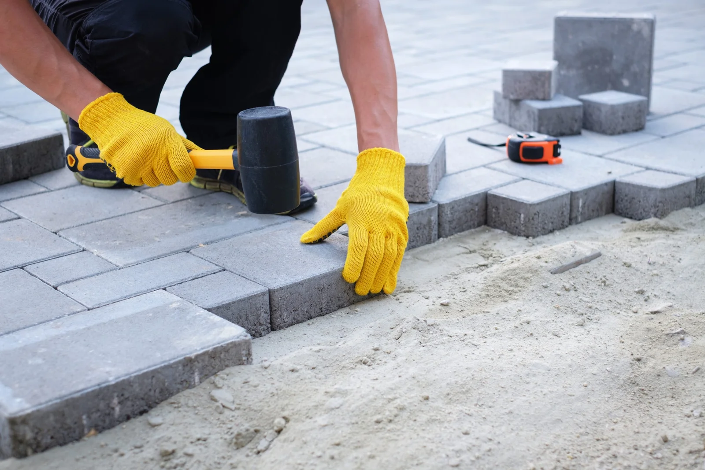
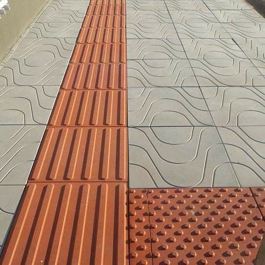
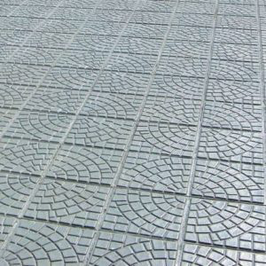
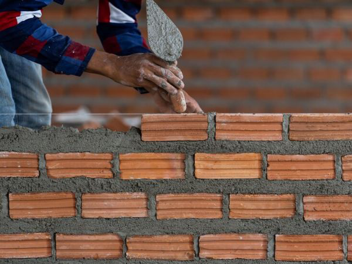

Pavimentação
Serviços prestados
Calçadas
Ladrilhos
Muros


A Joelcio Pavimentações é uma empresa consolidada no mercado de construção e pavimentação, com 5 anos de atuação e uma trajetória de sucesso marcada pela qualidade, pontualidade e confiança.
Desde a sua fundação, a empresa se destaca pela execução de serviços de pavimentação de alta performance, atendendo a uma ampla gama de clientes e realizando diversas obras em diferentes segmentos, como infraestrutura urbana, rodovias, ruas e estacionamentos.
Ao longo desses cinco anos, a Joelcio Pavimentações construiu uma sólida reputação, sendo reconhecida pela sua expertise e pelo compromisso em entregar resultados de excelência. A empresa conta com uma equipe qualificada e dedicada, sempre buscando inovação e as melhores soluções técnicas para cada projeto.
O portfólio de obras concluídas com sucesso é um reflexo do empenho e da seriedade com que a empresa trata cada etapa do processo, desde o planejamento até a execução final.
A confiança dos clientes é a base do sucesso da Joelcio Pavimentações, que preza pela transparência, cumprimento de prazos e qualidade superior em todos os seus serviços. Com uma visão de futuro promissora, a empresa continua ampliando sua atuação e conquistando novos mercados, sempre com o objetivo de proporcionar soluções sustentáveis e eficientes em pavimentação.
Hoje, a Joelcio Pavimentações é sinônimo de competência, confiança e um compromisso inabalável com a excelência.